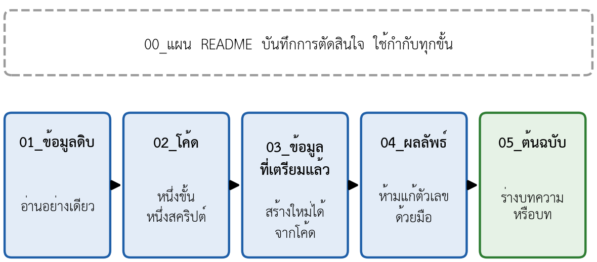

บทที่ 1 แผนจัดการข้อมูลและการเลือกแหล่งข้อมูล
เมื่อศึกษาบทนี้จบแล้ว นิสิตสามารถ
- อธิบายความแตกต่างระหว่างข้อมูลปฐมภูมิและข้อมูลทุติยภูมิ พร้อมข้อดีและข้อจำกัดของแต่ละแบบได้
- อธิบายเหตุผลที่งานวิจัยทั้งสองแบบต้องมีแผนจัดการข้อมูลตั้งแต่ก่อนได้ข้อมูลชิ้นแรกได้
- จำแนกองค์ประกอบของแผนจัดการข้อมูล และระบุว่าองค์ประกอบใดมีรายละเอียดต่างกันระหว่างข้อมูลสองแบบได้
- ประเมินความเหมาะของแหล่งข้อมูลกับคำถามวิจัยของตนตามผังตัดสินใจในบทได้
- จัดทำแผนจัดการข้อมูลฉบับย่อ โครงสร้างโฟลเดอร์ และสมุดบันทึกการตัดสินใจของโครงการตนเองได้ (ใบงานที่ 1)
ความนำ
นิสิตบัณฑิตศึกษาจำนวนมากเริ่มงานวิจัยจากคำถามว่าจะใช้สถิติอะไร แต่ปัญหาที่ทำให้งานล่าช้าหรือต้องเริ่มใหม่มักเกิดก่อนถึงการวิเคราะห์ ไฟล์คำตอบหายเพราะเก็บไว้ในเครื่องเดียว ข้อมูลดิบ (raw data) ถูกแก้ทับจนย้อนกลับไม่ได้ ชุดข้อมูลที่ดาวน์โหลดมาไม่มีตัวแปรที่กรอบแนวคิดต้องการ หรือข้อตกลงการใช้ข้อมูล (data use agreement) ไม่อนุญาตให้ทำสิ่งที่วางแผนไว้ ปัญหาเหล่านี้ไม่ได้เกิดจากความรู้สถิติไม่พอ แต่เกิดจากการไม่ได้วางแผนว่าข้อมูลจะมาจากไหนและจะดูแลอย่างไรตั้งแต่ต้น
หลักสูตรนี้แบ่งเส้นทางของนิสิตเป็นสองแทร็ก แทร็ก A สำหรับผู้ที่เก็บข้อมูลเองด้วยแบบสอบถาม และแทร็ก B สำหรับผู้ที่ใช้ชุดข้อมูลที่มีอยู่แล้ว แต่ก่อนแยกแทร็ก นิสิตทุกคนต้องผ่านแกนร่วมชุดเดียวกัน บทนี้เป็นบทแรกของแกนร่วม และตอบคำถามสองข้อ ข้อแรกคือจะดูแลข้อมูลตลอดโครงการอย่างไร ข้อที่สองคือจะได้ข้อมูลมาจากทางใด คำถามทั้งสองข้อใช้กับนิสิตทุกคน ไม่ว่าสุดท้ายจะเดินแทร็กใด
บทนี้เริ่มจากนิยามและข้อดีข้อจำกัดของข้อมูลปฐมภูมิและข้อมูลทุติยภูมิ แล้วอธิบายเหตุผลที่แผนจัดการข้อมูลและการเลือกแหล่งข้อมูลอยู่ในแกนร่วม จากนั้นกล่าวถึงองค์ประกอบของแผนจัดการข้อมูล การจัดระเบียบไฟล์และเอกสารกำกับข้อมูล (data documentation) และผังตัดสินใจเลือกแหล่งข้อมูล (data source decision tree) ท้ายบทมีกรณีศึกษาเดินเรื่องของนิสิตสองคน ซึ่งจะติดตามไปตลอดหลักสูตร
1.1 ข้อมูลปฐมภูมิและข้อมูลทุติยภูมิ
ข้อมูลปฐมภูมิ (primary data) คือ ข้อมูลที่เก็บขึ้นใหม่เพื่อตอบปัญหาวิจัยเฉพาะเรื่อง ด้วยวิธีการที่เลือกให้เหมาะกับปัญหานั้น ส่วน ข้อมูลทุติยภูมิ (secondary data) คือ ข้อมูลที่เดิมเก็บไว้เพื่อจุดประสงค์อื่น แล้วนำกลับมาใช้ตอบคำถามวิจัยใหม่ (Hox & Boeije, 2005, p. 593) นิยามทั้งสองไม่ได้แบ่งตามชนิดของข้อมูล แต่แบ่งตามความสัมพันธ์ระหว่างข้อมูลกับคำถามวิจัย ข้อมูลชุดเดียวกันเป็นข้อมูลปฐมภูมิของผู้ที่เก็บ และกลายเป็นข้อมูลทุติยภูมิเมื่อผู้อื่นนำไปใช้ตอบคำถามที่ต่างออกไป
1.1.1 รูปแบบการใช้ข้อมูลทุติยภูมิ
Hox และ Boeije (2005, p. 593) จัดการใช้ข้อมูลทุติยภูมิเป็นห้าแบบ ได้แก่
(1) การบรรยายลักษณะของสังคมในปัจจุบันหรือในอดีต
(2) การวิจัยเปรียบเทียบหรือการทำซ้ำงานวิจัยเดิม
(3) การวิเคราะห์ใหม่ด้วยคำถามที่งานเดิมไม่ได้ถาม
(4) การพัฒนาแบบการวิจัย (research design) และวิธีการ
(5) การเรียนการสอน
งานวิจัยทางบริหารธุรกิจที่ใช้ข้อมูลงบการเงิน ข้อมูลตลาดหลักทรัพย์ หรือข้อมูลสำรวจระดับประเทศ ส่วนใหญ่อยู่ในแบบที่ (3) คือนำข้อมูลที่หน่วยงานอื่นเก็บไว้มาตอบคำถามใหม่ของผู้วิจัย
1.1.2 ข้อดีและข้อจำกัดของข้อมูลแต่ละแบบ
ข้อดีสำคัญที่สุดของการเก็บข้อมูลเอง คือผู้วิจัยกำหนดนิยามเชิงปฏิบัติการ (operational definition) ของแนวคิด แบบการวิจัย และวิธีเก็บข้อมูลให้ตรงกับคำถามวิจัยได้ งานจึงสอดคล้องกันทั้งเรื่อง และข้อมูลที่ได้ช่วยตอบปัญหาได้จริง ข้อเสียสำคัญที่สุดคือต้นทุนสูงและใช้เวลามาก ในทางกลับกัน ข้อดีของข้อมูลทุติยภูมิคือต้นทุนต่ำกว่ามากและเข้าถึงได้เร็วกว่า แต่ข้อจำกัดคือข้อมูลเก็บมาเพื่อจุดประสงค์อื่น จึงอาจไม่เหมาะกับปัญหาวิจัยที่กำลังศึกษา (Hox & Boeije, 2005, p. 594)
ข้อจำกัดเรื่องความไม่ตรงกับคำถามมีหลายระดับ ความต่างเล็กน้อยของนิยาม การจัดประเภท หรือแนวคิดระหว่างการศึกษาเดิมกับการศึกษาใหม่ ก็มีผลต่อการนำข้อมูลกลับมาใช้ได้ (Hox & Boeije, 2005, p. 598) ในงานวิจัยการจัดการเชิงกลยุทธ์ ปัญหานี้ปรากฏชัดในการใช้ตัวแทนจากข้อมูลเอกสาร (archival proxy) เช่น ความเข้มข้นของการวิจัยและพัฒนา จำนวนสิทธิบัตร และการอ้างอิงสิทธิบัตร ซึ่งงานต่าง ๆ ใช้แทนแนวคิดที่หลากหลาย ทำให้ตีความผลได้ยาก และบางกรณีตัวแทนไม่ได้สัมพันธ์ใกล้ชิดกับแนวคิดที่ตั้งใจวัด (Ketchen et al., 2013, บทคัดย่อ)
ตารางที่ 1.1 เปรียบเทียบข้อมูลปฐมภูมิและข้อมูลทุติยภูมิ
| ประเด็น | ข้อมูลปฐมภูมิ | ข้อมูลทุติยภูมิ |
|---|---|---|
| จุดประสงค์ของการเก็บ | เก็บเพื่อคำถามวิจัยของผู้วิจัยเอง | เก็บเพื่อจุดประสงค์อื่น แล้วนำมาใช้ใหม่ |
| การควบคุมนิยามและวิธีวัด | ผู้วิจัยกำหนดเอง | ผู้วิจัยเปลี่ยนไม่ได้ ต้องรับตามที่ผู้เก็บเดิมกำหนด |
| ต้นทุนและเวลา | สูง | ต่ำกว่าและเร็วกว่า |
| ความเสี่ยงหลัก | เก็บแล้วคุณภาพไม่พอ หรือผู้ตอบน้อย | ข้อมูลไม่ตรงกับคำถาม หรือผู้วิจัยเห็นข้อมูลก่อนตั้งสมมติฐาน (hypothesis) |
| เอกสารกำกับข้อมูล | ผู้วิจัยต้องจัดทำเอง | ต้องหาจากผู้ผลิตข้อมูล (data producer) ถ้าไม่มีจะประเมินคุณภาพไม่ได้ |
| สิทธิ์ในการใช้ | มาจากความยินยอม (informed consent) ของผู้ให้ข้อมูล | มาจากข้อตกลงการใช้ข้อมูลของผู้ผลิตหรือคลังข้อมูล (data archive) |
ที่มา ปรับจาก Hox และ Boeije (2005, pp. 593–598) แถวที่ 4 และ 6 ผู้เขียนเพิ่มเติม
1.2 เหตุผลที่แผนจัดการข้อมูลและการเลือกแหล่งข้อมูลเป็นแกนร่วม
ตารางที่ 1.1 อาจทำให้เข้าใจว่าข้อมูลสองแบบต้องใช้วิธีทำงานคนละชุดตั้งแต่ต้น แต่หลักสูตรนี้วางเรื่องการจัดการข้อมูลและการเลือกแหล่งข้อมูลไว้ในแกนร่วมด้วยเหตุผลห้าประการ ประการแรกมาจากแหล่งอ้างอิงโดยตรง ประการที่สองถึงห้าเป็นข้อเสนอของผู้เขียนที่สร้างจากหลักฐานในบทนี้
1.2.1 วงจรชีวิตข้อมูลรวมข้อมูลทั้งสองแบบไว้ในวงจรเดียว
Michener (2015, p. 2) อธิบายวงจรชีวิตข้อมูล (data life cycle) ว่าเริ่มจากการวางแผนว่าจะจัดการข้อมูลอย่างไรระหว่างและหลังโครงการ แล้วจึงค้นหาและได้มาซึ่งข้อมูลที่มีอยู่แล้ว เก็บและจัดระเบียบข้อมูลใหม่ ประกันคุณภาพ (quality assurance) บรรยายข้อมูลด้วยเมทาดาตา ใช้ข้อมูลในการวิเคราะห์ เก็บรักษา และแบ่งปันข้อมูล ข้อมูลที่มีอยู่แล้วและข้อมูลที่เก็บใหม่จึงเป็นสองขั้นที่อยู่ในวงจรเดียวกัน และทั้งสองขั้นอยู่หลังขั้นวางแผน หลักการ FAIR ก็ไม่ได้แยกตามที่มาของข้อมูลเช่นกัน หลักการนี้เสนอให้ข้อมูลวิชาการหาได้ เข้าถึงได้ ทำงานร่วมกันได้ และนำกลับมาใช้ได้ โดยเน้นทั้งการใช้ของคนและการที่เครื่องค้นหาและใช้ข้อมูลได้อัตโนมัติ (Wilkinson et al., 2016, p. 1)
1.2.2 การเลือกแหล่งข้อมูลคือจุดแยกแทร็ก จึงต้องอยู่ก่อนการแยก
ผู้เขียนเสนอว่า นิสิตยังไม่ควรรู้ว่าตนอยู่แทร็กใด จนกว่าจะตรวจแล้วว่าข้อมูลที่มีอยู่ตอบคำถามวิจัยได้หรือไม่ ถ้าการเลือกแหล่งข้อมูลไปอยู่ในแทร็กใดแทร็กหนึ่ง ก็เท่ากับเลือกคำตอบไว้ก่อนตั้งคำถาม ลำดับที่ถูกคือคำถามวิจัยมาก่อน ตัวแปรที่ต้องใช้ตามมา แล้วจึงตรวจว่าตัวแปรเหล่านั้นมีในข้อมูลที่มีอยู่หรือไม่ ลำดับนี้สอดคล้องกับข้อแนะนำของ Hünermund และคณะ (2025, p. 8) ที่ให้วาดแผนภาพเชิงสาเหตุโดยไม่ขึ้นกับว่ามีข้อมูลหรือไม่ และบันทึกตัวแปรที่ควรมีแต่วัดไม่ได้ไว้ด้วย รายละเอียดของแผนภาพเชิงสาเหตุอยู่ในบทที่ 2
1.2.3 หัวข้อของแผนเหมือนกัน ต่างกันที่รายละเอียด
ผู้เขียนเสนอว่า เมื่อเทียบหัวข้อในแผนจัดการข้อมูลทีละหัวข้อ ข้อมูลทั้งสองแบบต้องตอบคำถามชุดเดียวกัน ต่างกันเพียงคำตอบ ตัวอย่างเช่น ข้อมูลปฐมภูมิได้สิทธิ์ใช้จากความยินยอมของผู้ตอบ ส่วนข้อมูลทุติยภูมิได้สิทธิ์ใช้จากข้อตกลงกับผู้ผลิตข้อมูล แต่ทั้งสองแบบต้องตอบเหมือนกันว่าใช้อะไรได้ เก็บที่ไหน และแบ่งปันอะไรได้ (ตารางที่ 1.2) Michener (2015, p. 3) ระบุว่าผู้ประเมินแผนสนใจเป็นพิเศษว่าข้อมูลเป็นกรรมสิทธิ์ของผู้อื่น รวบรวมมาจากการศึกษาอื่น เกี่ยวข้องกับมนุษย์ หรือมีข้อจำกัดในการใช้และการเผยแพร่ต่อหรือไม่ คำถามเหล่านี้ใช้กับข้อมูลทั้งสองแบบ
ตารางที่ 1.2 หัวข้อในแผนจัดการข้อมูลที่ใช้ร่วมกันและรายละเอียดที่ต่างกัน
| หัวข้อในแผน | ข้อมูลปฐมภูมิ | ข้อมูลทุติยภูมิ |
|---|---|---|
| ที่มาของสิทธิ์ในการใช้ | ความยินยอมของผู้ตอบ | ข้อตกลงหรือสัญญาอนุญาตใช้ข้อมูล (license) |
| ข้อมูลส่วนบุคคล (personal data) | ผู้วิจัยเก็บเอง ต้องแยกข้อมูลระบุตัวตน (identifiers) ออกจากคำตอบ | อาจยังมีข้อมูลที่ระบุตัวได้เมื่อรวมหลายตัวแปร หรือมีข้อจำกัดการส่งออก |
| ฉบับของข้อมูล | วันที่ส่งออกไฟล์จากระบบเก็บแบบสอบถาม | รุ่นและวันที่ดาวน์โหลด เพราะผู้ผลิตปรับข้อมูลได้ |
| เอกสารกำกับข้อมูล | ผู้วิจัยเขียนคู่มือรหัสข้อมูลเอง | ใช้คู่มือของผู้ผลิต และบันทึกตัวแปรที่สร้างเพิ่ม |
| ข้อมูลดิบ | เก็บแบบอ่านอย่างเดียว (read-only) | เก็บแบบอ่านอย่างเดียว |
| การเก็บถาวร (archiving) และแบ่งปัน | ตามขอบเขตที่ผู้ตอบยินยอม | มักแบ่งปันข้อมูลไม่ได้ แต่แบ่งปันโค้ดและวิธีเข้าถึงได้ |
ที่มา ผู้เขียนสังเคราะห์ โดยแถวที่ 2 อาศัย Hox และ Boeije (2005, p. 598) แถวที่ 5 อาศัย Wilson และคณะ (2017, p. 2)
1.2.4 ความเสี่ยงต่อการทำซ้ำได้เกิดกับข้อมูลทั้งสองแบบ
ผู้เขียนเสนอว่า ความเชื่อที่ว่าข้อมูลที่มีอยู่แล้วไม่ต้องวางแผนเพราะ "ใคร ๆ ก็ดาวน์โหลดได้" ขัดกับหลักฐานจากงานที่ให้นักวิเคราะห์หลายทีมใช้ข้อมูลชุดเดียวกัน ในงานของ Silberzahn และคณะ (2018, p. 338) 29 ทีมวิเคราะห์ข้อมูลชุดเดียวกันเพื่อตอบคำถามเดียวกัน และใช้ชุดตัวแปรควบคุมต่างกันถึง 21 แบบ ในงานของ Breznau และคณะ (2022, p. 4) ข้อสรุปของทีมกระจายไปทั้งสามทาง 23 จาก 89 สนับสนุนสมมติฐาน 54 จาก 89 ปฏิเสธ และ 12 จาก 89 สรุปว่าทดสอบไม่ได้ ทั้งที่ทุกทีมใช้ข้อมูลทุติยภูมิชุดเดียวกัน ข้อมูลที่ทุกคนเข้าถึงได้จึงไม่ได้ทำให้ผลทำซ้ำได้ (reproducible) เอง สิ่งที่ทำให้ทำซ้ำได้คือการบันทึกว่าผู้วิจัยตัดสินใจอะไรกับข้อมูล ซึ่งเป็นส่วนหนึ่งของแผนจัดการข้อมูล
1.2.5 งานจำนวนมากใช้ข้อมูลทั้งสองแบบ
ผู้เขียนเสนอว่า งานวิจัยบริหารธุรกิจจำนวนไม่น้อยใช้ข้อมูลสองแบบร่วมกัน เช่น แบบสอบถามผู้บริหารที่นำไปเชื่อมกับข้อมูลงบการเงินของบริษัท หรือแบบสอบถามพนักงานที่เชื่อมกับข้อมูลระดับจังหวัด ถ้าแผนจัดการข้อมูลแยกตามแทร็ก งานลักษณะนี้จะไม่มีแผนที่ครอบคลุมทั้งหมด แผนเดียวในแกนร่วมจึงรองรับงานผสมได้ตั้งแต่ต้น
1.3 แผนจัดการข้อมูล
แผนจัดการข้อมูล (data management plan) คือ เอกสารที่อธิบายว่าผู้วิจัยจะจัดการข้อมูลอย่างไรระหว่างโครงการ และข้อมูลจะเป็นอย่างไรหลังจบโครงการ (Michener, 2015, p. 1) แผนจัดการข้อมูลเกิดขึ้นในบริบทการขอทุน ผู้ให้ทุนแต่ละแห่งมีข้อกำหนดเรื่องแผนแตกต่างกันมาก (Michener, 2015, p. 1) สำหรับนิสิต ผู้ที่ทำหน้าที่คล้ายผู้ให้ทุนคืออาจารย์ที่ปรึกษา บัณฑิตวิทยาลัย และคณะกรรมการจริยธรรมการวิจัย (research ethics committee) นิสิตจึงควรตรวจข้อกำหนดของหน่วยงานเหล่านี้ก่อนเขียนแผน
1.3.1 องค์ประกอบของแผนจัดการข้อมูล
Michener (2015, pp. 1–8) เสนอกฎสิบข้อในการเขียนแผนจัดการข้อมูลที่ดี ตารางที่ 1.3 สรุปกฎแต่ละข้อ และแสดงคำถามที่ผู้เขียนปรับให้เหมาะกับระดับวิทยานิพนธ์
ตารางที่ 1.3 องค์ประกอบของแผนจัดการข้อมูลและคำถามระดับวิทยานิพนธ์
| กฎของ Michener (2015) | สาระสำคัญ | คำถามสำหรับนิสิต (ผู้เขียนปรับ) |
|---|---|---|
| 1 ข้อกำหนดของผู้ให้ทุน | ผู้ให้ทุนแต่ละแห่งกำหนดต่างกัน (p. 1) | หลักสูตร บัณฑิตวิทยาลัย และคณะกรรมการจริยธรรมกำหนดอะไรไว้บ้าง |
| 2 ข้อมูลที่จะเก็บ | ทุกส่วนของแผนขึ้นกับชนิดและปริมาณข้อมูล รูปแบบไฟล์ควรเป็นรูปแบบเปิด (open format) เช่น CSV (p. 3) | ข้อมูลอะไร มาจากแหล่งใด รูปแบบไฟล์ใด มีกี่ไฟล์ |
| 3 การจัดระเบียบ | วิธีจัดตารางข้อมูล การตั้งชื่อไฟล์ และการควบคุมฉบับ (p. 4) | ตั้งชื่อไฟล์และโฟลเดอร์อย่างไร รู้ได้อย่างไรว่าไฟล์ใดล่าสุด |
| 4 เอกสารกำกับข้อมูล | ตารางตัวเลขแทบไม่มีความหมายถ้าไม่มีเมทาดาตา (p. 4) | คู่มือรหัสข้อมูลอยู่ที่ไหน ใครเขียน |
| 5 การประกันคุณภาพ | กระบวนการวัด ประเมิน และปรับคุณภาพข้อมูล (p. 5) | ตรวจความผิดพลาดของข้อมูลอย่างไร เมื่อไร |
| 6 การจัดเก็บและเก็บรักษา | เก็บอย่างน้อยสามสำเนาในอย่างน้อยสองสถานที่ และสำรองตามรอบ (p. 5) | สำเนาที่สองและสามอยู่ที่ไหน ทดสอบเปิดไฟล์สำรองเมื่อไร |
| 7 นโยบายข้อมูล | การอนุญาตใช้ การแบ่งปัน และข้อจำกัดทางกฎหมายและจริยธรรมของข้อมูลมนุษย์และข้อมูลอ่อนไหว (p. 6) | มีข้อมูลส่วนบุคคลหรือข้อตกลงจำกัดการใช้หรือไม่ ใช้เครื่องมือ AI กับไฟล์ใดได้ |
| 8 การเผยแพร่ | เผยแพร่ข้อมูลอย่างไรและเมื่อไร (p. 7) | หลังสำเร็จการศึกษา แบ่งปันอะไรได้และไม่ได้ |
| 9 บทบาทและความรับผิดชอบ | ระบุผู้รับผิดชอบทุกงาน และทบทวนแผนสม่ำเสมอ (p. 7) | ใครเข้าถึงข้อมูลได้ นิสิต อาจารย์ที่ปรึกษา หรือผู้ช่วยวิจัย |
| 10 งบประมาณ | ข้อผิดพลาดที่พบบ่อยคือลืมตั้งงบสำหรับงานจัดการข้อมูล (p. 8) | ต้องใช้พื้นที่เก็บข้อมูล ค่าธรรมเนียมฐานข้อมูล หรือเวลาของผู้ช่วยหรือไม่ |
ที่มา คอลัมน์ที่ 1 และ 2 สรุปจาก Michener (2015) คอลัมน์ที่ 3 ผู้เขียนปรับสำหรับวิทยานิพนธ์
1.3.2 การจัดเก็บและการสำรองข้อมูล (backup)
Michener (2015, p. 5) ชี้ว่าข้อผิดพลาดที่พบบ่อย แม้ในนักวิจัยที่มีประสบการณ์ คือการคิดว่าคอมพิวเตอร์ส่วนตัวจะอยู่ตลอดไป แล้วไม่สำรองข้อมูลระหว่างโครงการ แนวทางที่ดีคือเก็บข้อมูลอย่างน้อยสามสำเนาในอย่างน้อยสองสถานที่ และสำรองตามรอบที่กำหนด Wilson และคณะ (2017, p. 4) ให้ข้อแนะนำที่สอดคล้องกันว่า ข้อมูลดิบต้องสำรองไว้มากกว่าหนึ่งแห่ง และถ้าใช้ฮาร์ดดิสก์ภายนอกให้เก็บไว้นอกสถานที่เดิม
ผู้เขียนเสนอเพิ่มว่า การสำรองข้อมูลที่ยังไม่เคยทดสอบเปิดคืนไม่ถือว่าเป็นการสำรอง นิสิตควรลองเปิดไฟล์จากที่สำรองจริงอย่างน้อยหนึ่งครั้งก่อนเริ่มเก็บหรือดาวน์โหลดข้อมูล และบันทึกวันที่ทดสอบไว้ในแผน
1.3.3 นโยบายข้อมูล ข้อมูลส่วนบุคคล และเครื่องมือ AI
กฎข้อที่ 7 ของ Michener (2015, p. 6) ให้แผนระบุการอนุญาตใช้ การแบ่งปัน การจำกัดช่วงเวลาเผยแพร่ และข้อจำกัดทางกฎหมายและจริยธรรมของข้อมูลมนุษย์และข้อมูลอ่อนไหว ข้อมูลทุติยภูมิก็มีประเด็นนี้ Hox และ Boeije (2005, p. 598) อธิบายว่าผู้ผลิตข้อมูลบางครั้งต้องปรับข้อมูลก่อนเผยแพร่เพื่อปกป้องความลับ (confidentiality) ของผู้ตอบ เพราะการรวมข้อมูลหลายตัวแปรของบุคคลเดียวอาจระบุตัวบุคคลได้ คลังข้อมูลแต่ละแห่งยังกำหนดเงื่อนไขการให้ข้อมูลต่างกัน บางชุดจำกัดให้ใช้เฉพาะผู้ขอ และบางกรณีผู้ขอต้องแจ้งจุดประสงค์ต่อผู้เก็บข้อมูลเดิม (Hox & Boeije, 2005, p. 597)
ผู้เขียนเสนอว่า แผนของนิสิตควรมีหัวข้อเรื่องเครื่องมือ AI ด้วย โดยระบุว่าไฟล์ใดนำเข้าเครื่องมือ AI ภายนอกได้ และไฟล์ใดห้าม ได้แก่ ไฟล์ที่มีข้อมูลส่วนบุคคลของผู้ตอบ และไฟล์ที่ข้อตกลงการใช้จำกัดการส่งออก หัวข้อนี้ต้องเขียนก่อนเริ่มใช้เครื่องมือ เพราะเมื่อข้อมูลออกนอกเครื่องไปแล้วจะเรียกคืนไม่ได้ รายละเอียดด้านกฎหมายคุ้มครองข้อมูลส่วนบุคคลและจริยธรรมการวิจัยในมนุษย์จะกล่าวในบทที่ว่าด้วยจริยธรรม
1.3.4 แผนเป็นเอกสารที่มีชีวิต
แผนจัดการข้อมูลไม่ใช่เอกสารที่เขียนครั้งเดียวแล้วเก็บ Michener (2015, pp. 7–8) เสนอให้ถือแผนเป็นเอกสารที่มีชีวิต ทบทวนเป็นระยะ ปรับเมื่อขั้นตอน นโยบาย เทคโนโลยี หรือบุคลากรเปลี่ยน และบันทึกประวัติการแก้ไขว่าแก้อะไร เมื่อไร และใครแก้ สำหรับนิสิต จุดที่ควรทบทวนแผนคือเมื่อเปลี่ยนแหล่งข้อมูล เมื่อได้ผลการพิจารณาจริยธรรม และก่อนส่งเล่ม Michener (2015, p. 6) ยังระบุว่า แนวปฏิบัติทั่วไปสำหรับนักศึกษาบัณฑิตคือเผยแพร่ข้อมูลเมื่อได้รับปริญญา ซึ่งนิสิตควรวางแผนไว้ตั้งแต่ต้นว่าส่วนใดเผยแพร่ได้
1.4 การจัดระเบียบไฟล์ เอกสารกำกับข้อมูล และสมุดบันทึกการตัดสินใจ
แผนจัดการข้อมูลบอกว่าจะทำอะไร ส่วนการจัดระเบียบไฟล์คือการลงมือทำในเครื่องของนิสิต Wilson และคณะ (2017, p. 2) เสนอแนวปฏิบัติขั้นต่ำที่ "ดีพอ" สำหรับงานวิจัยที่ใช้คอมพิวเตอร์ ซึ่งนักวิจัยทุกคนควรพิจารณานำไปใช้ หัวข้อนี้เลือกแนวปฏิบัติที่เกี่ยวกับการเริ่มต้นโครงการ
1.4.1 ข้อมูลดิบเป็นไฟล์อ่านอย่างเดียว
แนวปฏิบัติข้อแรกของ Wilson และคณะ (2017, p. 2) คือเก็บข้อมูลตามที่ได้มาครั้งแรก การเขียนทับข้อมูลดิบด้วยฉบับที่ทำความสะอาดแล้วทำให้รันการวิเคราะห์ใหม่ตั้งแต่ต้นไม่ได้ และกู้คืนไม่ได้เมื่อการวิเคราะห์ผิดพลาด ข้อนี้ใช้กับข้อมูลทั้งสองแบบ ไฟล์คำตอบที่ส่งออกจากระบบแบบสอบถาม และไฟล์ที่ดาวน์โหลดจากคลังข้อมูล ล้วนเป็นข้อมูลดิบที่ต้องไม่แก้ไข ผู้เขียนเสนอให้ตั้งค่าโฟลเดอร์ข้อมูลดิบเป็นอ่านอย่างเดียว เพื่อกันการแก้ทับโดยไม่ตั้งใจ
1.4.2 ทุกขั้นของการจัดการข้อมูลบันทึกเป็นสคริปต์
Wilson และคณะ (2017, p. 5) ชี้ว่าการจัดการข้อมูลเป็นส่วนหนึ่งของการวิเคราะห์เช่นเดียวกับแบบจำลองทางสถิติ ถ้าไม่บันทึกขั้นตอนนี้อย่างละเอียด ทั้งตัวผู้วิจัยและผู้อื่นจะทำซ้ำการวิเคราะห์ไม่ได้ วิธีที่ดีที่สุดคือเขียนสคริปต์สำหรับทุกขั้น ข้อมูลที่ผ่านการจัดการแล้วควรอยู่ในรูปที่วิเคราะห์ได้ง่าย คือหนึ่งคอลัมน์เป็นหนึ่งตัวแปร และหนึ่งแถวเป็นหนึ่งหน่วยสังเกต (Wilson et al., 2017, p. 5) สำหรับผู้ที่บันทึกข้อมูลในตารางคำนวณ Broman และ Woo (2018, บทคัดย่อ) เสนอหลักการ เช่น ความสม่ำเสมอ การเขียนวันที่แบบ YYYY-MM-DD การใส่ค่าเดียวในหนึ่งช่อง การจัดข้อมูลเป็นสี่เหลี่ยมเดียว การทำพจนานุกรมข้อมูล การไม่ใส่สูตรคำนวณในไฟล์ดิบ การไม่ใช้สีเป็นข้อมูล และการบันทึกเป็นไฟล์ข้อความ
1.4.3 โครงสร้างโฟลเดอร์
Wilson และคณะ (2017, pp. 3, 9) เสนอให้แต่ละโครงการอยู่ในโฟลเดอร์ของตนเอง และแยกโฟลเดอร์เอกสาร ข้อมูล ผลลัพธ์ และโค้ดออกจากกัน พร้อมไฟล์ README ที่บอกชื่อโครงการ คำอธิบาย ผู้ติดต่อ และตัวอย่างวิธีรัน (Wilson et al., 2017, p. 8) ตารางที่ 1.4 เป็นโครงสร้างที่ผู้เขียนปรับให้เข้ากับขั้นตอนของหลักสูตรนี้
ตารางที่ 1.4 โครงสร้างโฟลเดอร์โครงการวิจัยที่แนะนำ
| โฟลเดอร์หรือไฟล์ | เก็บอะไร | หมายเหตุ |
|---|---|---|
| 00_แผน | แผนจัดการข้อมูล ผังตัดสินใจเลือกแหล่งข้อมูล แผนวิเคราะห์ที่ลงทะเบียน | ทบทวนตามรอบ |
| 01_ข้อมูลดิบ | ไฟล์ตามที่ได้มาครั้งแรก และคู่มือของผู้ผลิตข้อมูล | ตั้งเป็นอ่านอย่างเดียว |
| 02_โค้ด | สคริปต์จัดการข้อมูลและวิเคราะห์ | หนึ่งขั้นหนึ่งสคริปต์ |
| 03_ข้อมูลที่เตรียมแล้ว | ไฟล์ที่สคริปต์สร้างจากข้อมูลดิบ | สร้างใหม่ได้จากโค้ด |
| 04_ผลลัพธ์ | ตารางและภาพที่สคริปต์สร้าง | ห้ามแก้ตัวเลขด้วยมือ |
| 05_ต้นฉบับ | ร่างบทความหรือบทของวิทยานิพนธ์ | |
| README | ชื่อโครงการ คำอธิบาย ผู้ติดต่อ วิธีรัน | ไฟล์แรกที่ผู้อื่นเปิด |
| บันทึกการตัดสินใจ | วันที่ ทางเลือกที่มี ทางที่เลือก เหตุผล | ดูหัวข้อ 1.4.5 |
ที่มา ผู้เขียนปรับจาก Wilson และคณะ (2017, pp. 3, 8–9, 11)
ภาพที่ 1.1 แสดงโครงสร้างในตารางที่ 1.4 เป็นลำดับงาน ข้อมูลเดินจากโฟลเดอร์ 01 ไปถึง 05 ส่วนแผน README และบันทึกการตัดสินใจใช้กำกับทุกขั้น

ที่มา ผู้เขียนเสนอ ปรับจากตารางที่ 1.4 และ Wilson และคณะ (2017)
1.4.4 เอกสารกำกับข้อมูลและคู่มือรหัสข้อมูล
คู่มือรหัสข้อมูล (codebook) คือ เอกสารที่อธิบายตัวแปร ค่าที่เป็นไปได้ของแต่ละตัวแปร และตำแหน่งของตัวแปรในไฟล์ข้อมูล (Hox & Boeije, 2005, p. 593) ส่วน เมทาดาตา (metadata) คือ รายละเอียดว่าข้อมูลเก็บอะไร ที่ไหน เมื่อไร ทำไม และอย่างไร รวมถึงการประมวลผลและการตีความ ซึ่งทำให้ผู้อื่นค้นพบ ใช้ และอ้างอิงข้อมูลได้ (Michener, 2015, p. 4)
สำหรับข้อมูลปฐมภูมิ นิสิตต้องเขียนคู่มือรหัสข้อมูลเอง สำหรับข้อมูลทุติยภูมิ เอกสารของผู้ผลิตข้อมูลมีความสำคัญยิ่งกว่า Hox และ Boeije (2005, p. 598) ระบุว่าเอกสารประกอบข้อมูลทุติยภูมิควรมีอย่างน้อย จุดประสงค์ของการศึกษาเดิม นิยามเชิงปฏิบัติการ รายละเอียดการเก็บข้อมูลว่าใคร เมื่อไร และที่ไหน หน่วยที่ศึกษาและเกณฑ์การสุ่ม และอคติที่ทราบ ถ้าเมทาดาตาไม่ครบหรือไม่มีเลย ผู้วิจัยจะประเมินความเที่ยงและความตรงของวิธีการเดิมไม่ได้ ผู้ที่วิเคราะห์ข้อมูลใหม่ยังต้องรู้ด้วยว่าผู้เก็บเดิมได้แก้ไขและลงรหัสข้อมูลดิบอย่างไร (Hox & Boeije, 2005, p. 598)
1.4.5 สมุดบันทึกการตัดสินใจ
ผู้เขียนเสนอให้นิสิตมีสมุดบันทึกการตัดสินใจตั้งแต่วันแรกของโครงการ ทุกครั้งที่เลือกทางใดทางหนึ่ง เช่น ตัดตัวแปร เปลี่ยนมาตรวัด เปลี่ยนกลุ่มตัวอย่าง หรือเปลี่ยนแหล่งข้อมูล ให้บันทึกวันที่ ทางเลือกที่มี ทางที่เลือก และเหตุผล เหตุผลของข้อเสนอนี้มาจากหลักฐานในหัวข้อ 1.2.4 ซึ่งแสดงว่าการตัดสินใจในการวิเคราะห์ที่ต่างกันทำให้ข้อสรุปจากข้อมูลชุดเดียวกันต่างกันได้มาก สมุดบันทึกนี้จะเป็นวัตถุดิบของการลงทะเบียนแผนวิเคราะห์ล่วงหน้า (preregistration) ในบทที่ 3 ด้วย
1.5 การเลือกแหล่งข้อมูล
เมื่อมีแผนจัดการข้อมูลแล้ว ขั้นต่อไปคือการตัดสินว่าจะใช้ข้อมูลที่มีอยู่หรือเก็บเอง Hox และ Boeije (2005, p. 594) ชี้ว่าผู้วิจัยที่ต้องการศึกษาปัญหาเชิงทฤษฎีหรือปัญหานโยบายมีทางเลือกว่าจะเก็บข้อมูลเองหรือค้นหาข้อมูลที่มีอยู่และเกี่ยวข้องกับปัญหา หัวข้อนี้เสนอเกณฑ์และผังตัดสินใจสำหรับการเลือก
1.5.1 เกณฑ์ความเหมาะของข้อมูลที่มีอยู่
Hox และ Boeije (2005, p. 598) วางเกณฑ์สำคัญไว้ว่า ความเหมาะของข้อมูลกับปัญหาวิจัยเป็นเรื่องที่ผู้วิจัยต้องใช้วิจารณญาณอย่างรอบคอบ ข้อจำกัดของข้อมูลที่ทำให้วิเคราะห์ได้ไม่ครบบางส่วน เช่น ทดสอบสมมติฐานบางข้อไม่ได้ ถือว่ายอมรับได้ แต่ถ้าข้อจำกัดของข้อมูลทำให้ต้องเปลี่ยนคำถามวิจัยเพื่อให้ใช้ข้อมูลได้ ถือว่ายอมรับไม่ได้ เกณฑ์นี้ตรงกับความเสี่ยงที่ Ketchen และคณะ (2013, บทคัดย่อ) ชี้ไว้ในงานการจัดการเชิงกลยุทธ์ คือการใช้ตัวแปรที่หาได้แทนแนวคิดที่ต้องการวัด โดยที่ตัวแทนนั้นอาจไม่ได้วัดแนวคิดนั้นจริง
ความเสี่ยงอีกด้านของข้อมูลที่มีอยู่คือผู้วิจัยเปิดดูข้อมูลได้ก่อนตั้งสมมติฐาน Van den Akker และคณะ (2021, p. 1) ชี้ว่าความรู้เดิมของผู้วิจัยเกี่ยวกับข้อมูลอาจทำให้สมมติฐานและการวิเคราะห์มีอคติ Mertens และ Krypotos (2019, p. 338) อธิบายว่างานที่ใช้ข้อมูลที่มีอยู่ต่างจากงานที่เก็บข้อมูลใหม่ตรงที่ผู้วิจัยเปลี่ยนแบบการวิจัยไม่ได้ ผู้เขียนจึงเสนอว่า ก่อนเปิดไฟล์ข้อมูลทุติยภูมิครั้งแรก นิสิตควรตรวจความเหมาะจากเอกสารของผู้ผลิตข้อมูลก่อน และบันทึกว่าเคยเห็นอะไรในข้อมูลมาแล้วบ้าง
1.5.2 ผังตัดสินใจเลือกแหล่งข้อมูล
ผังตัดสินใจในตารางที่ 1.5 เป็นข้อเสนอของผู้เขียน สร้างจากเกณฑ์ในหัวข้อ 1.5.1 นิสิตตอบคำถามตามลำดับ และเขียนเหตุผลประกอบทุกข้อ
ตารางที่ 1.5 ผังตัดสินใจเลือกแหล่งข้อมูล
| ลำดับ | คำถาม | ถ้าใช่ | ถ้าไม่ใช่ |
|---|---|---|---|
| 1 | ตัวแปรหลักทุกตัวในกรอบแนวคิดมีอยู่ในชุดข้อมูลที่เข้าถึงได้ และนิยามตรงกับแนวคิด | ไปข้อ 2 | เก็บข้อมูลเอง (แทร็ก A) หรือใช้ข้อมูลสองแบบร่วมกัน |
| 2 | หน่วยวิเคราะห์ ประชากร และช่วงเวลาของชุดข้อมูลตรงกับคำถาม | ไปข้อ 3 | เก็บข้อมูลเอง หรือปรับคำถามโดยไม่เปลี่ยนแก่นของคำถาม แล้วบันทึกเหตุผล |
| 3 | เอกสารของผู้ผลิตข้อมูลพอให้ประเมินวิธีเก็บและคุณภาพได้ | ไปข้อ 4 | หาแหล่งอื่น เพราะประเมินความเที่ยงและความตรงไม่ได้ |
| 4 | ข้อตกลงการใช้ข้อมูลยอมให้ทำงานนี้ เก็บไฟล์ตามแผน และส่งออกผลได้ | ใช้ข้อมูลที่มีอยู่ (แทร็ก B) | ห้ามเริ่มวิเคราะห์ ตรวจเงื่อนไขกับผู้ให้ข้อมูลก่อน |
| 5 | ถ้าต้องเก็บเอง มีเวลา งบประมาณ และการเข้าถึงกลุ่มตัวอย่างพอ | เดินแทร็ก A | ปรับขอบเขตคำถาม แล้วกลับไปข้อ 1 |
ที่มา ผู้เขียนสังเคราะห์จาก Hox และ Boeije (2005, pp. 594, 597–598) และ Ketchen และคณะ (2013)
ผู้เขียนเสนอข้อสังเกตต่อผังนี้สองข้อ ข้อแรก คำว่า "ปรับคำถาม" ในข้อ 2 และ 5 หมายถึงการปรับขอบเขต เช่น จำกัดอุตสาหกรรมหรือช่วงเวลา ไม่ใช่การเปลี่ยนแนวคิดหลักให้ตรงกับตัวแปรที่มี ซึ่งเป็นสิ่งที่เกณฑ์ของ Hox และ Boeije (2005, p. 598) ถือว่ายอมรับไม่ได้ ข้อที่สอง ผลของผังอาจเป็นการใช้ข้อมูลสองแบบร่วมกัน เช่น ใช้ข้อมูลงบการเงินเป็นตัวแปรผลลัพธ์ และเก็บแบบสอบถามเพื่อวัดแนวคิดที่ฐานข้อมูลไม่มี ในกรณีนี้นิสิตต้องทำทั้งสองแทร็กในส่วนที่เกี่ยวข้อง และแผนจัดการข้อมูลต้องครอบคลุมการเชื่อมข้อมูลสองแหล่งเข้าด้วยกัน
1.6 ข้อผิดพลาดที่พบบ่อย
ตารางที่ 1.6 ข้อผิดพลาดที่พบบ่อยและวิธีแก้
| ข้อผิดพลาด | ตัวอย่าง | วิธีแก้ |
|---|---|---|
| คิดว่าคอมพิวเตอร์ส่วนตัวจะอยู่ตลอดไป | เก็บไฟล์คำตอบไว้ในโน้ตบุ๊กเครื่องเดียว | สามสำเนา สองสถานที่ และทดสอบเปิดไฟล์สำรอง (Michener, 2015, p. 5) |
| แก้ข้อมูลดิบโดยตรง | ลบแถวที่ตอบไม่ครบในไฟล์ต้นฉบับ | ข้อมูลดิบอ่านอย่างเดียว ทำความสะอาดด้วยสคริปต์ (Wilson et al., 2017, pp. 2, 5) |
| ชื่อไฟล์ไม่บอกฉบับ | ไฟล์ชื่อ final และ final2 | กำหนดแบบแผนการตั้งชื่อและการควบคุมฉบับในแผน (Michener, 2015, p. 4) |
| คิดว่าข้อมูลที่มีอยู่ไม่ต้องวางแผน | ดาวน์โหลดแล้วเปิดดูความสัมพันธ์ก่อนเขียนโครงร่าง | ตรวจความเหมาะจากเอกสารก่อน และบันทึกความรู้เดิม (Van den Akker et al., 2021, p. 1) |
| ใช้ตัวแปรที่หาได้แทนแนวคิดโดยไม่ตรวจ | ใช้ค่าใช้จ่ายวิจัยและพัฒนาแทนความสามารถด้านนวัตกรรม | อธิบายว่าตัวแทนวัดแนวคิดได้อย่างไร หรือหาแหล่งที่วัดตรงกว่า (Ketchen et al., 2013) |
| ไม่อ่านข้อตกลงการใช้ข้อมูล | อัปโหลดข้อมูลรายบริษัทขึ้นคลังสาธารณะ | อ่านข้อตกลงก่อนดาวน์โหลด และเขียนลงแผนว่าส่งออกอะไรได้ |
| นำข้อมูลต้องห้ามเข้าเครื่องมือ AI | วางไฟล์คำตอบที่มีชื่อผู้ตอบลงในแชตบอต | ระบุไฟล์ที่ห้ามนำเข้าเครื่องมือ AI ไว้ในแผนตั้งแต่ต้น (ผู้เขียนเสนอ) |
ปริม นิสิตปริญญาโท ต้องการศึกษาการใช้เครื่องมือ AI ในงานประจำวันกับความผูกพันในงาน (work engagement) ของพนักงานสำนักงาน และวางแผนเก็บแบบสอบถามออนไลน์เอง ปริมคิดว่าตนเก็บข้อมูลเองจึงไม่ต้องมีแผนจัดการข้อมูล และเก็บไฟล์คำตอบไว้ในโน้ตบุ๊กเครื่องเดียว
ธาม นิสิตปริญญาเอก ต้องการศึกษาความเข้มข้นของการลงทุนวิจัยและพัฒนา (R&D intensity) กับผลการดำเนินงานของบริษัทจดทะเบียน โดยใช้ข้อมูลงบการเงินจากฐานข้อมูลที่คณะบอกรับ ธามดาวน์โหลดข้อมูลมาเปิดดูความสัมพันธ์ของตัวแปรหลายคู่ก่อนเขียนโครงร่าง ต่อมาพบว่าฐานข้อมูลไม่มีตัวแปรที่วัดความสามารถในการดูดซับความรู้ (absorptive capacity) ซึ่งอยู่ในกรอบแนวคิดของตน มีแต่ค่าใช้จ่ายวิจัยและพัฒนา และข้อตกลงการใช้ฐานข้อมูลไม่อนุญาตให้เผยแพร่ข้อมูลรายบริษัทต่อ
คำถามชวนคิด ธามควรใช้ค่าใช้จ่ายวิจัยและพัฒนาแทนความสามารถในการดูดซับความรู้ เปลี่ยนคำถามวิจัย หรือเก็บแบบสอบถามเพิ่ม นิสิตจะใช้หลักฐานใดในบทนี้ตัดสิน และทั้งปริมและธามควรเขียนอะไรลงในแผนจัดการข้อมูลเป็นอย่างแรก
เมื่อศึกษาบทนี้แล้ว นิสิตสามารถแยกข้อมูลปฐมภูมิออกจากข้อมูลทุติยภูมิได้จากความสัมพันธ์ระหว่างข้อมูลกับคำถามวิจัย ไม่ใช่จากชนิดของข้อมูล และอธิบายได้ว่าการเก็บข้อมูลเองให้ความควบคุมเหนือนิยามและวิธีวัดแลกกับต้นทุนและเวลา ส่วนข้อมูลที่มีอยู่ให้ความรวดเร็วแลกกับความเสี่ยงที่ข้อมูลจะไม่ตรงกับคำถาม นิสิตสามารถอธิบายเหตุผลที่แผนจัดการข้อมูลและการเลือกแหล่งข้อมูลอยู่ในแกนร่วม เพราะวงจรชีวิตข้อมูลรวมข้อมูลทั้งสองแบบไว้หลังขั้นวางแผน หัวข้อของแผนเหมือนกันแม้รายละเอียดต่างกัน และความเสี่ยงต่อการทำซ้ำได้เกิดกับข้อมูลทั้งสองแบบ
นิสิตยังสามารถจำแนกองค์ประกอบสิบประการของแผนจัดการข้อมูล จัดโครงสร้างโฟลเดอร์ที่แยกข้อมูลดิบออกจากข้อมูลที่เตรียมแล้ว และใช้ผังตัดสินใจประเมินว่าข้อมูลที่มีอยู่เหมาะกับคำถามหรือไม่ โดยยึดหลักว่าข้อจำกัดของข้อมูลยอมรับได้ถ้าจำกัดการวิเคราะห์บางส่วน แต่ยอมรับไม่ได้ถ้าบังคับให้เปลี่ยนคำถามวิจัย
ใบงานที่ 1 ให้นิสิตนำหลักในบทนี้ไปใช้กับโครงการของตนเอง ผลของใบงานเป็นข้อมูลนำเข้าของบทที่ 2 ซึ่งจะแปลงคำถามวิจัยเป็นตัวแปร หน่วยวิเคราะห์ และแผนภาพเชิงสาเหตุ และนิสิตอาจต้องกลับมาทบทวนผังตัดสินใจในบทนี้เมื่อแผนภาพเชิงสาเหตุชี้ว่าต้องมีตัวแปรเพิ่ม
- ข้อมูลปฐมภูมิ (primary data)
- ข้อมูลทุติยภูมิ (secondary data)
- แผนจัดการข้อมูล (data management plan)
- วงจรชีวิตข้อมูล (data life cycle)
- หลักการ FAIR (FAIR principles)
- เมทาดาตา (metadata)
- คู่มือรหัสข้อมูล (codebook)
- ตัวแทนจากข้อมูลเอกสาร (archival proxy)
- ข้อมูลแบบ tidy (tidy data)
- สมุดบันทึกการตัดสินใจ (decision log)
คำถามทบทวน
- ข้อมูลชุดเดียวกันเป็นได้ทั้งข้อมูลปฐมภูมิและข้อมูลทุติยภูมิหรือไม่ จงอธิบายพร้อมยกตัวอย่างจากงานวิจัยบริหารธุรกิจ
- จงเปรียบเทียบที่มาของสิทธิ์ในการใช้ข้อมูล และการเก็บถาวรและแบ่งปัน ระหว่างข้อมูลปฐมภูมิและข้อมูลทุติยภูมิ แล้วอธิบายว่าทำไมทั้งสองเรื่องจึงอยู่ในแผนจัดการข้อมูลฉบับเดียวกันได้
- งานที่ให้นักวิเคราะห์หลายทีมใช้ข้อมูลชุดเดียวกันบอกอะไรเกี่ยวกับความเชื่อที่ว่า "ข้อมูลที่มีอยู่แล้วไม่ต้องวางแผน"
- นิสิตคนหนึ่งพบว่าชุดข้อมูลที่ตนต้องการใช้ไม่มีตัวแปรตามในกรอบแนวคิด จึงเสนอเปลี่ยนตัวแปรตามเป็นตัวแปรที่ชุดข้อมูลมี ตามเกณฑ์ของ Hox และ Boeije (2005) การตัดสินใจนี้ยอมรับได้หรือไม่ เพราะเหตุใด
- จงวิเคราะห์กรณีของธามด้วยผังตัดสินใจในตารางที่ 1.5 ว่าคำตอบในแต่ละข้อเป็นอย่างไร และธามควรเดินแทร็กใด
ใบงานที่ 1 แผนจัดการข้อมูลฉบับย่อและผังตัดสินใจของโครงการตนเอง
ให้นิสิตแต่ละคนจัดทำเอกสารสำหรับโครงการวิจัยของตนเอง ความยาวรวมไม่เกินสามหน้ากระดาษ A4
- แผนจัดการข้อมูลฉบับย่อไม่เกินหนึ่งหน้า ตอบคำถามในคอลัมน์ที่ 3 ของตารางที่ 1.3 ให้ครบทั้งสิบข้อ ข้อที่ยังไม่รู้ให้เขียนว่ายังไม่รู้และจะหาคำตอบเมื่อใด
- ผังตัดสินใจตามตารางที่ 1.5 ที่ตอบแล้ว พร้อมเหตุผลข้อละไม่เกินสองบรรทัด และข้อสรุปว่าจะเดินแทร็ก A แทร็ก B หรือใช้ข้อมูลสองแบบร่วมกัน
- ภาพหน้าจอโครงสร้างโฟลเดอร์ที่สร้างจริงตามตารางที่ 1.4 และหลักฐานว่าเปิดไฟล์จากที่สำรองได้หนึ่งครั้ง
- สมุดบันทึกการตัดสินใจที่มีอย่างน้อยหนึ่งรายการ คือการตัดสินใจเลือกแหล่งข้อมูลในข้อ 2
เอกสารอ้างอิง
วราวุฒิ นาคบุญนำ. (2569). บทที่ 1 แผนจัดการข้อมูลและการเลือกแหล่งข้อมูล. ใน เริ่มต้นทำวิจัย จากคำถามถึงชุดข้อมูลที่วิเคราะห์ได้. คณะการบัญชีและการจัดการ มหาวิทยาลัยมหาสารคาม. https://aj-warawut.github.io/academic-web-teaching/rs_lesson_01.html